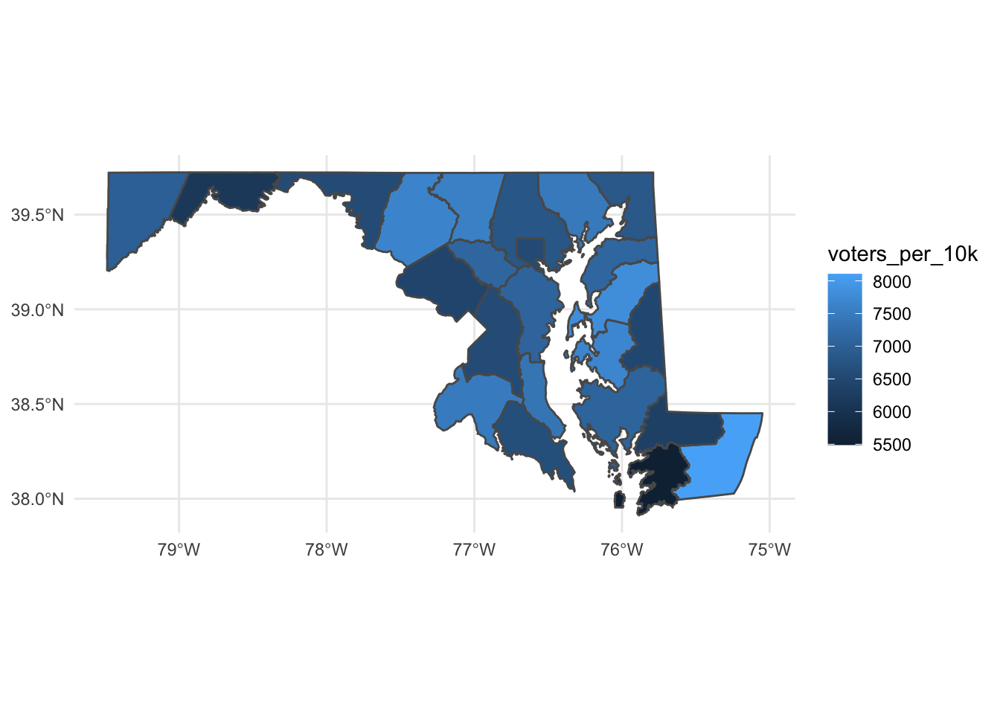
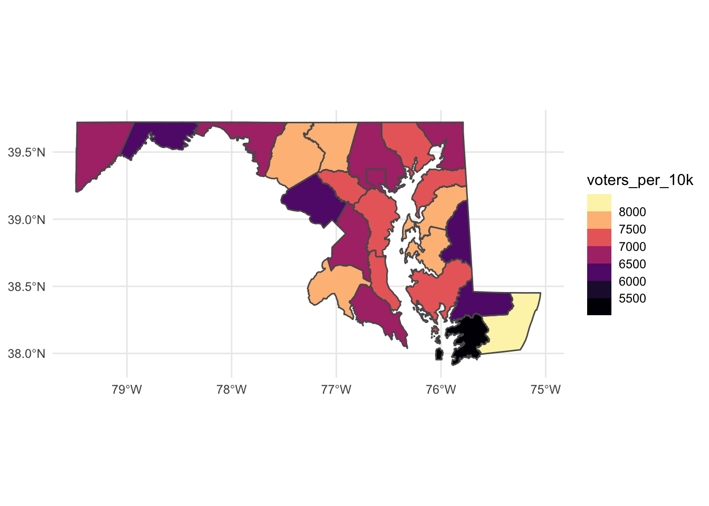
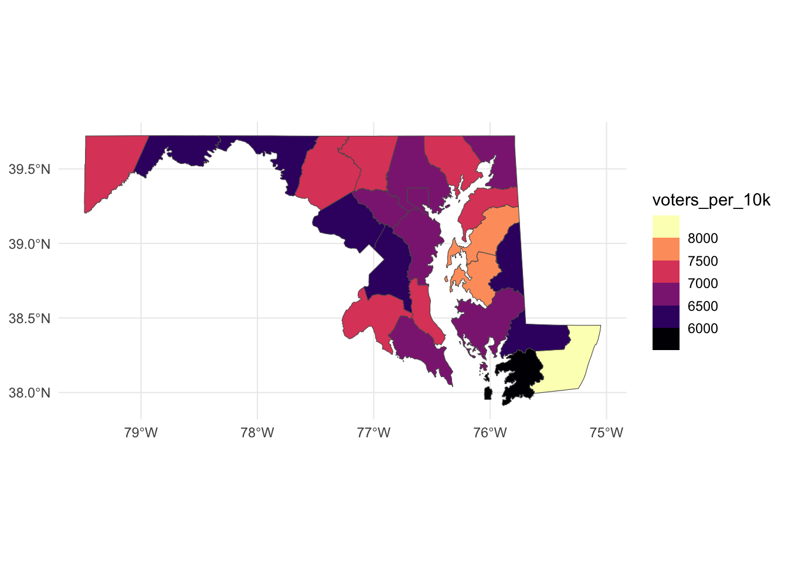
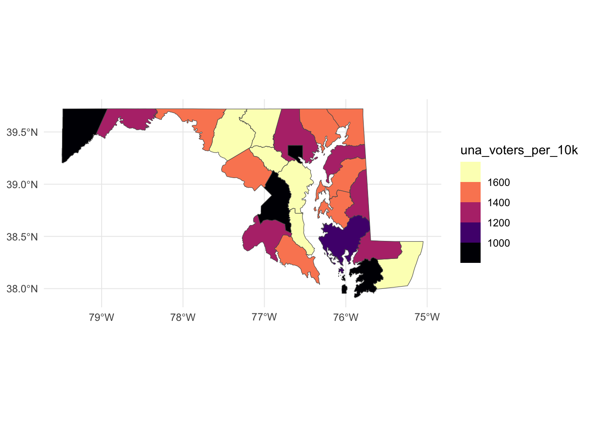

library(tidyverse)
library(sf)
library(janitor)
library(tidycensus)
census_api_key("549950d36c22ff16455fe196bbbd01d63cfbe6cf")24 Geographic analysis
In the previous chapter, we looked at election precincts in Prince George’s County to show a bit of a pattern regarding concentration of the precincts with the most and 0 eligible voters. Let’s go little further and look at voters statewide.
First, let’s load the libraries we’ll need. We’re also going to load tidycensus and set an API key for tidycensus.
For the rest of this chapter, we’re going to work on building a map that will help us gain insight into geographic patterns in voter registration by county in Maryland. Our question: by examining the number of Democrats/Republicans/Unaffiliated voters per 100,000 people in each county, what regional geographic patterns can we identify?
We’ve got voters by county, so let’s load that and take a look:
voters_by_county <- read_csv("data/eligible_voters.csv")Rows: 24 Columns: 10
── Column specification ────────────────────────────────────────────────────────
Delimiter: ","
chr (1): County
dbl (9): DEM, REP, BAR, GRN, LIB, WCP, OTH, UNA, TOTAL
ℹ Use `spec()` to retrieve the full column specification for this data.
ℹ Specify the column types or set `show_col_types = FALSE` to quiet this message.voters_by_county |> arrange(desc(TOTAL))# A tibble: 24 × 10
County DEM REP BAR GRN LIB WCP OTH UNA TOTAL
<chr> <dbl> <dbl> <dbl> <dbl> <dbl> <dbl> <dbl> <dbl> <dbl>
1 Montgomery 409636 97505 0 1113 2227 446 5468 156978 673373
2 Prince George's 462097 37739 0 789 1313 593 10733 85143 598407
3 Baltimore County 309297 137378 0 898 2493 687 5921 106789 563463
4 Anne Arundel 173922 129893 0 632 2257 434 2951 96403 406492
5 Baltimore City 303620 28211 0 908 1080 666 3984 56665 395134
6 Howard 120954 49011 0 351 894 134 1981 56199 229524
7 Frederick 76712 68334 0 318 1147 179 1060 48035 195785
8 Harford 65127 80005 0 238 1182 202 1628 40778 189160
9 Carroll 33572 63771 0 191 797 102 1033 28139 127605
10 Charles 74373 23334 0 129 425 143 864 21819 121087
# … with 14 more rowsSo, what do we see here? Montgomery County has the most, followed by Prince George’s & Baltimore County. Checks out.
Next, we’ll go out and get population data for each county from tidycensus. The variable for total population is B01001_001.
md_county_population <- get_acs(geography = "county",
variables = c(population = "B01001_001"),
state = "MD")Getting data from the 2017-2021 5-year ACSmd_county_population# A tibble: 24 × 5
GEOID NAME variable estimate moe
<chr> <chr> <chr> <dbl> <dbl>
1 24001 Allegany County, Maryland population 68684 NA
2 24003 Anne Arundel County, Maryland population 584064 NA
3 24005 Baltimore County, Maryland population 850702 NA
4 24009 Calvert County, Maryland population 92515 NA
5 24011 Caroline County, Maryland population 33234 NA
6 24013 Carroll County, Maryland population 172148 NA
7 24015 Cecil County, Maryland population 103370 NA
8 24017 Charles County, Maryland population 165209 NA
9 24019 Dorchester County, Maryland population 32486 NA
10 24021 Frederick County, Maryland population 267498 NA
# … with 14 more rowsUltimately, we’re going to join this county population table with our voters by county table, and then calculate a voters per 50,000 people statistic. But remember, we then want to visualize this data by drawing a county map that helps us pick out trends. Thinking ahead, we know we’ll need a county map shapefile. Fortunately, we can pull this geometry information right from tidycensus at the same time that we pull in the population data by adding “geometry = TRUE” to our get_acs function.
md_county_population <- get_acs(geography = "county",
variables = c(population = "B01001_001"),
state = "MD",
geometry = TRUE)Getting data from the 2017-2021 5-year ACSDownloading feature geometry from the Census website. To cache shapefiles for use in future sessions, set `options(tigris_use_cache = TRUE)`.
|
| | 0%
|
| | 1%
|
|= | 1%
|
|= | 2%
|
|== | 2%
|
|== | 3%
|
|=== | 4%
|
|=== | 5%
|
|==== | 5%
|
|==== | 6%
|
|===== | 7%
|
|===== | 8%
|
|====== | 8%
|
|====== | 9%
|
|======= | 10%
|
|======= | 11%
|
|======== | 11%
|
|======== | 12%
|
|========= | 13%
|
|========== | 14%
|
|========== | 15%
|
|=========== | 15%
|
|=========== | 16%
|
|============ | 17%
|
|============= | 19%
|
|============== | 19%
|
|============== | 20%
|
|============== | 21%
|
|=============== | 21%
|
|=============== | 22%
|
|================ | 23%
|
|================= | 24%
|
|================= | 25%
|
|================== | 25%
|
|================== | 26%
|
|=================== | 27%
|
|=================== | 28%
|
|==================== | 28%
|
|==================== | 29%
|
|===================== | 30%
|
|====================== | 31%
|
|====================== | 32%
|
|======================= | 33%
|
|======================== | 34%
|
|========================= | 35%
|
|========================= | 36%
|
|========================== | 36%
|
|========================== | 37%
|
|========================== | 38%
|
|=========================== | 38%
|
|=========================== | 39%
|
|============================ | 39%
|
|============================ | 40%
|
|============================= | 41%
|
|============================= | 42%
|
|============================== | 42%
|
|============================== | 43%
|
|=============================== | 44%
|
|=============================== | 45%
|
|================================ | 45%
|
|================================ | 46%
|
|================================= | 47%
|
|================================= | 48%
|
|================================== | 48%
|
|================================== | 49%
|
|=================================== | 49%
|
|=================================== | 50%
|
|===================================== | 52%
|
|===================================== | 54%
|
|====================================== | 54%
|
|====================================== | 55%
|
|======================================= | 55%
|
|======================================= | 56%
|
|======================================== | 56%
|
|======================================== | 57%
|
|======================================== | 58%
|
|========================================= | 58%
|
|========================================= | 59%
|
|========================================== | 61%
|
|=========================================== | 61%
|
|=========================================== | 62%
|
|============================================ | 63%
|
|============================================= | 64%
|
|============================================= | 65%
|
|============================================== | 65%
|
|============================================== | 66%
|
|=============================================== | 67%
|
|=============================================== | 68%
|
|================================================ | 68%
|
|================================================= | 69%
|
|================================================= | 70%
|
|================================================= | 71%
|
|================================================== | 71%
|
|================================================== | 72%
|
|=================================================== | 72%
|
|=================================================== | 73%
|
|==================================================== | 74%
|
|==================================================== | 75%
|
|===================================================== | 76%
|
|======================================================= | 78%
|
|======================================================= | 79%
|
|======================================================== | 80%
|
|========================================================= | 81%
|
|========================================================= | 82%
|
|========================================================== | 83%
|
|=========================================================== | 84%
|
|=========================================================== | 85%
|
|============================================================ | 85%
|
|============================================================ | 86%
|
|============================================================= | 88%
|
|============================================================== | 88%
|
|=============================================================== | 90%
|
|================================================================ | 91%
|
|================================================================ | 92%
|
|================================================================= | 92%
|
|================================================================= | 93%
|
|================================================================== | 94%
|
|================================================================== | 95%
|
|=================================================================== | 95%
|
|=================================================================== | 96%
|
|==================================================================== | 97%
|
|==================================================================== | 98%
|
|===================================================================== | 98%
|
|===================================================================== | 99%
|
|======================================================================| 100%md_county_populationSimple feature collection with 24 features and 5 fields
Geometry type: MULTIPOLYGON
Dimension: XY
Bounding box: xmin: -79.48765 ymin: 37.91172 xmax: -75.04894 ymax: 39.72304
Geodetic CRS: NAD83
First 10 features:
GEOID NAME variable estimate moe
1 24047 Worcester County, Maryland population 52322 NA
2 24003 Anne Arundel County, Maryland population 584064 NA
3 24033 Prince George's County, Maryland population 957767 NA
4 24025 Harford County, Maryland population 259162 NA
5 24015 Cecil County, Maryland population 103370 NA
6 24011 Caroline County, Maryland population 33234 NA
7 24023 Garrett County, Maryland population 28955 NA
8 24029 Kent County, Maryland population 19335 NA
9 24041 Talbot County, Maryland population 37510 NA
10 24045 Wicomico County, Maryland population 103223 NA
geometry
1 MULTIPOLYGON (((-75.66061 3...
2 MULTIPOLYGON (((-76.83849 3...
3 MULTIPOLYGON (((-77.07995 3...
4 MULTIPOLYGON (((-76.0921 39...
5 MULTIPOLYGON (((-76.23326 3...
6 MULTIPOLYGON (((-76.01505 3...
7 MULTIPOLYGON (((-79.48765 3...
8 MULTIPOLYGON (((-76.27737 3...
9 MULTIPOLYGON (((-76.34647 3...
10 MULTIPOLYGON (((-75.92033 3...We now have a new column, geometry, that contains the “MULTIPOLYGON” data that will draw an outline of each county when we go to draw a map.
The next step will be to join our population data to our voter data on the county column.
But there’s a problem. The column in our population data that has county names is called “NAME”, and it has the full name of the county spelled out in title case – first word capitalized and has “County” and “Maryland” in it. The voter data just has the name of the county. For example, the population data has “Anne Arundel County, Maryland” and the voter data has “Anne Arundel”.
md_county_populationSimple feature collection with 24 features and 5 fields
Geometry type: MULTIPOLYGON
Dimension: XY
Bounding box: xmin: -79.48765 ymin: 37.91172 xmax: -75.04894 ymax: 39.72304
Geodetic CRS: NAD83
First 10 features:
GEOID NAME variable estimate moe
1 24047 Worcester County, Maryland population 52322 NA
2 24003 Anne Arundel County, Maryland population 584064 NA
3 24033 Prince George's County, Maryland population 957767 NA
4 24025 Harford County, Maryland population 259162 NA
5 24015 Cecil County, Maryland population 103370 NA
6 24011 Caroline County, Maryland population 33234 NA
7 24023 Garrett County, Maryland population 28955 NA
8 24029 Kent County, Maryland population 19335 NA
9 24041 Talbot County, Maryland population 37510 NA
10 24045 Wicomico County, Maryland population 103223 NA
geometry
1 MULTIPOLYGON (((-75.66061 3...
2 MULTIPOLYGON (((-76.83849 3...
3 MULTIPOLYGON (((-77.07995 3...
4 MULTIPOLYGON (((-76.0921 39...
5 MULTIPOLYGON (((-76.23326 3...
6 MULTIPOLYGON (((-76.01505 3...
7 MULTIPOLYGON (((-79.48765 3...
8 MULTIPOLYGON (((-76.27737 3...
9 MULTIPOLYGON (((-76.34647 3...
10 MULTIPOLYGON (((-75.92033 3...voters_by_county# A tibble: 24 × 10
County DEM REP BAR GRN LIB WCP OTH UNA TOTAL
<chr> <dbl> <dbl> <dbl> <dbl> <dbl> <dbl> <dbl> <dbl> <dbl>
1 Allegany 11793 22732 0 76 223 73 382 8337 43616
2 Anne Arundel 173922 129893 0 632 2257 434 2951 96403 406492
3 Baltimore City 303620 28211 0 908 1080 666 3984 56665 395134
4 Baltimore County 309297 137378 0 898 2493 687 5921 106789 563463
5 Calvert 23779 27912 0 94 410 69 548 15169 67981
6 Caroline 6250 10539 0 34 108 40 160 4454 21585
7 Carroll 33572 63771 0 191 797 102 1033 28139 127605
8 Cecil 20666 31961 0 111 447 104 678 16360 70327
9 Charles 74373 23334 0 129 425 143 864 21819 121087
10 Dorchester 9608 8965 0 22 110 33 191 3745 22674
# … with 14 more rowsIf they’re going to join properly, we need to clean one of them up to make it match the other.
Let’s clean the population table. We’re going to rename the “NAME” column to “County”, then remove “, Maryland” and “County” and make the county titlecase. Next we’ll remove any white spaces after that first cleaning step that, if left in, would prevent a proper join. We’re also going to rename the column that contains the population information from “estimate” to “population” and select only the county name and the population columns, along with the geometry. That leaves us with this tidy table.
md_county_population <- md_county_population |>
rename(County = NAME) |>
mutate(County = str_to_title(str_remove_all(County,", Maryland|County"))) |>
mutate(County = str_trim(County,side="both")) |>
rename(population = estimate) |>
select(County, population, geometry)
md_county_populationSimple feature collection with 24 features and 2 fields
Geometry type: MULTIPOLYGON
Dimension: XY
Bounding box: xmin: -79.48765 ymin: 37.91172 xmax: -75.04894 ymax: 39.72304
Geodetic CRS: NAD83
First 10 features:
County population geometry
1 Worcester 52322 MULTIPOLYGON (((-75.66061 3...
2 Anne Arundel 584064 MULTIPOLYGON (((-76.83849 3...
3 Prince George's 957767 MULTIPOLYGON (((-77.07995 3...
4 Harford 259162 MULTIPOLYGON (((-76.0921 39...
5 Cecil 103370 MULTIPOLYGON (((-76.23326 3...
6 Caroline 33234 MULTIPOLYGON (((-76.01505 3...
7 Garrett 28955 MULTIPOLYGON (((-79.48765 3...
8 Kent 19335 MULTIPOLYGON (((-76.27737 3...
9 Talbot 37510 MULTIPOLYGON (((-76.34647 3...
10 Wicomico 103223 MULTIPOLYGON (((-75.92033 3...Now we can join them.
md_voters_per_10k <- md_county_population |>
left_join(voters_by_county)Joining with `by = join_by(County)`md_voters_per_10kSimple feature collection with 24 features and 11 fields
Geometry type: MULTIPOLYGON
Dimension: XY
Bounding box: xmin: -79.48765 ymin: 37.91172 xmax: -75.04894 ymax: 39.72304
Geodetic CRS: NAD83
First 10 features:
County population DEM REP BAR GRN LIB WCP OTH UNA TOTAL
1 Worcester 52322 13864 19122 0 56 212 36 454 8372 42116
2 Anne Arundel 584064 173922 129893 0 632 2257 434 2951 96403 406492
3 Prince George's 957767 462097 37739 0 789 1313 593 10733 85143 598407
4 Harford 259162 65127 80005 0 238 1182 202 1628 40778 189160
5 Cecil 103370 20666 31961 0 111 447 104 678 16360 70327
6 Caroline 33234 6250 10539 0 34 108 40 160 4454 21585
7 Garrett 28955 3719 13584 0 24 101 20 157 2791 20396
8 Kent 19335 5865 5221 0 20 66 22 110 2565 13869
9 Talbot 37510 10803 11698 0 39 139 20 219 5582 28500
10 Wicomico 103223 26749 23897 0 105 347 106 667 13406 65277
geometry
1 MULTIPOLYGON (((-75.66061 3...
2 MULTIPOLYGON (((-76.83849 3...
3 MULTIPOLYGON (((-77.07995 3...
4 MULTIPOLYGON (((-76.0921 39...
5 MULTIPOLYGON (((-76.23326 3...
6 MULTIPOLYGON (((-76.01505 3...
7 MULTIPOLYGON (((-79.48765 3...
8 MULTIPOLYGON (((-76.27737 3...
9 MULTIPOLYGON (((-76.34647 3...
10 MULTIPOLYGON (((-75.92033 3...Hang on - there’s at least one county with NA values - St. Mary’s, which is spelled “Saint Mary’s” in the voter dataframe. And Baltimore County didn’t match, either. Let’s fix that using if_else, which allows us to conditionally mutate:
md_county_population <- md_county_population |>
mutate(County = if_else(County == "St. Mary's", "Saint Mary's", County)) |>
mutate(County = if_else(County == "Baltimore", "Baltimore County", County))Our final step before visualization, let’s calculate the number of voters per 10,000 population for each county and sort from highest to lowest to see what trends we can identify just from the table.
md_voters_per_10k <- md_county_population |>
left_join(voters_by_county) |>
mutate(voters_per_10k = TOTAL/population*10000) |>
arrange(desc(voters_per_10k))Joining with `by = join_by(County)`md_voters_per_10kSimple feature collection with 24 features and 12 fields
Geometry type: MULTIPOLYGON
Dimension: XY
Bounding box: xmin: -79.48765 ymin: 37.91172 xmax: -75.04894 ymax: 39.72304
Geodetic CRS: NAD83
First 10 features:
County population DEM REP BAR GRN LIB WCP OTH UNA TOTAL
1 Worcester 52322 13864 19122 0 56 212 36 454 8372 42116
2 Queen Anne's 49702 11102 19579 0 44 223 35 295 7916 39194
3 Talbot 37510 10803 11698 0 39 139 20 219 5582 28500
4 Carroll 172148 33572 63771 0 191 797 102 1033 28139 127605
5 Calvert 92515 23779 27912 0 94 410 69 548 15169 67981
6 Charles 165209 74373 23334 0 129 425 143 864 21819 121087
7 Frederick 267498 76712 68334 0 318 1147 179 1060 48035 195785
8 Harford 259162 65127 80005 0 238 1182 202 1628 40778 189160
9 Kent 19335 5865 5221 0 20 66 22 110 2565 13869
10 Garrett 28955 3719 13584 0 24 101 20 157 2791 20396
voters_per_10k geometry
1 8049.386 MULTIPOLYGON (((-75.66061 3...
2 7885.799 MULTIPOLYGON (((-76.24918 3...
3 7597.974 MULTIPOLYGON (((-76.34647 3...
4 7412.517 MULTIPOLYGON (((-77.31151 3...
5 7348.106 MULTIPOLYGON (((-76.70121 3...
6 7329.322 MULTIPOLYGON (((-77.27382 3...
7 7319.120 MULTIPOLYGON (((-77.67716 3...
8 7298.910 MULTIPOLYGON (((-76.0921 39...
9 7173.002 MULTIPOLYGON (((-76.27737 3...
10 7044.034 MULTIPOLYGON (((-79.48765 3...Let’s take a look at the result of this table. There are some surprising ones at the top, some of Maryland’s smallest counties! Worcester, Queen Anne’s, Talbot may not have that many voters, but they also don’t have a lot of people.
Okay, now let’s visualize. We’re going to build a choropleth map, with the color of each county – the fill – set according to the number of voters per 10K on a color gradient.
ggplot() +
geom_sf(data=md_voters_per_10k, aes(fill=voters_per_10k)) +
theme_minimal()
This map is okay, but the color scale makes it hard to draw fine-grained differences. Let’s try applying the magma color scale we learned in the last chapter.
ggplot() +
geom_sf(data=md_voters_per_10k, aes(fill=voters_per_10k)) +
theme_minimal() +
scale_fill_viridis_b(option="magma")
The highest ranking counties stand out nicely in this version, but it’s still hard to make out fine-grained differences between other counties.
So let’s change the color scale to a “log” scale, which will help us see those differences a bit more clearly.
ggplot() +
geom_sf(data=md_voters_per_10k, aes(fill=voters_per_10k)) +
theme_minimal() +
scale_fill_viridis_b(option="magma",trans = "log")
Let’s repeat that for Unaffiliated voters:
md_voters_per_10k <- md_voters_per_10k |>
mutate(una_voters_per_10k = UNA/population*10000)And then map it:
ggplot() +
geom_sf(data=md_voters_per_10k, aes(fill=una_voters_per_10k)) +
theme_minimal() +
scale_fill_viridis_b(option="magma",trans = "log")
What regional patterns do you see, especially on the ends of the scale?